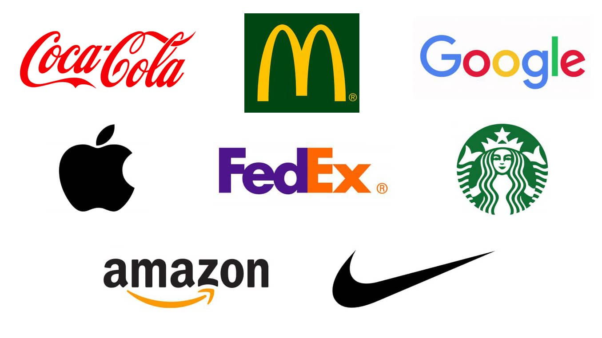

سلام خدمت شما دوستان عزیز، ما در این سایت اومدیم که، درس های پولدار شدن را
به شما بیاموزیم که حتی اگر شما جوان هستید، با خوندن مطالب این سایت، میتونید که در این سن کسب درآمد چندصد ملیونی داشته و آینده ای بسیار درخشان و پر از پول
پس با ما همراه باشید (100% تضمینی)

در سن نوجوانی و جوانی شما مینونید از طریق کار فزیکی پول در بیارید ولی با
درآمد کم ولی باید این رو بدونید که شما میتونید که با کارهای اینترنتی درآمد های میلیاردی داشته باشید
و ما در اینجا 10 شغل اینترنتی پر درآمد رو به شما عزیزان معرفی خواهیم کرد
طراحی وب:
طراحی وب یکی از پر درآمد ترین شغل های دنیاست
!!.
شما با این شغل میتونید چند صد ملیون و یا میلیار درآمد داشته باشید
چرا که کسب و کار های امروزی بعد از کرونا، اینترنتی شده اند و حتی کسب و کار های سنتی.
چرا که وقتی میخواهید برای قیمت گرفتن و خرید یک چیز جستجو کنید این سایت ها هستند که به شما اینامکان رو میدهند
و برای همین هست که طراحی وب یک شغل پر درآمد هست. اما باید توجه کنید که برای این کار باید یکسری توانایی هایی داشته باشد
این توانایی ها به دو دسته تقسیم میشوند:
- ضروری:
صبر زیاد_داشتن انگشتان تقویت شده_بلد بودن زبان انگلیسی
- غیرضروری:
داشتن حافظه قوی_دوام در برابر خستگی_توانایی تایپ سریع(ده انگشتی)
شاید بعد از خواندن، سوال کنید چرا صبر زیاد؟
شما باید این رو بدونید که شما نمیتونید انتظار داشته باشید که هر چی به کامپیوتر دستور دادید انجام بده برای همین ممکنه که شما رو عصبانی کنه.
چرا زبان انگلیسی؟
همینطور که میدونید طراحی وب یک زبان انگلیسی است و شما باید قادر به تایپ انگلیسی باشید و باید بدونید که اگر انگلیسی بلد باشید میتونید بسیار راحت تر طراحی سایت رو یاد بگیرید.
و اما در مورد دوام در برابر خستگی
اگر شما زیاد خسته بشید در هنگام کار خیلی دیر تر پروژتون رو تموم میکنید و اگر هم مقامت زیاد کنید ممکنه به بدنتون آسیب بزنه.
شما میتونید از طریق لینک زیر تایپ ده انگشتی رو یاد بگیرید
تایپکده(آموزش تایپ ده انگشتی)
و در آخر شما به سرمایه نیاز دارید مثل:
سرمایه برای تهیه لپ تاپ و یا خرید دوره های طراحی وب. اما شما میتونید تمام این زیان ها را هنگامی که حرفه ای شدید به راحتی جبران کنید
طراحی لوگو:

به تصاویر بالا نگاه کنید شما رو یاد چی میندازند؟ سایت آمازون یا کمپانی اپل؟
.طراحی لوگو یکی از نیاز های امروزی که هر کمپانی یا مطب پزشک و یا شرکتی نیاز به اون دارد
طراحی لوگو میتونه خیلی درآمد زا باشه برای مثال لوگو شرکت نفت انگلیس رو 210ملیون دلار خریدند یا همین لوگو های ساده مثل بی بی سی رو 180 هزار دلار
خریدن برای همین هست که شما به سادگی میتونید صاحب درامد شوید اما باید توجه داشته باشید شما باید یکسری توانایی هایی رو بلد باشید
- توانایی ها
خلاقیت بسیار بالا_شناخت رنگ ها و تئوری آنها_مهارت های فنی
در نگاه اول شاید شناخت رنگ ها چیز بسیار مهمی نباشد اما شما باید در لوگو های خود رنگ های مشتری پسند را انتخاب کنید چون که رنگ ها در لوگوها فریاد میزنند برای مثال باید بدونید که چه رنگ هایی زننده و چه رنگ هایی ملایم هستند
مهارت های فنیشما برای اینکه یک طراح لوگو حرفه ای شوید باید مهارت های فنی و نرم افزاری خوبی داشته باشید مثل فتوشاپ یا الیستریتور و غیره. شما میتونید از طریق لینک زیر آموزش های مورد نظرتون رو یاد بگیرید
مکتب خونهو در آخر هم سرمایه های مورد نیاز
این شغل هم مثل طراحی وب نیاز به لپ تاپ و خرید دوره های آموزشی دارد اما شما میتونید مثل طراحی وب این زیان ها را به راحتی هر چه تمام تر جبران کنید
کسب درآمد از طریق اینستاگرام
حتما شنیدید که چه افراد زیادی از طریق اینستا گرام کسب
درآمد میکنند آیا این کار سختی است؟
باید این رو بدونید که کسب درآمد از اینستا بسیار کار راحتی است به شرط این که خلاق باشید
درآمد از اینستا گرام چقدر است؟
باید بدونید که شما میتونید کسب درآمد بالایی داشته باشید اما نسبت به فعالیتتون این درآمد ممکنه فرق کنه اما به طور کلی کمترین درامد از اینستا گرام از 4 ملیون تومان شروع میشود
چگونه میتونیم کسب درآمد کنیم؟
ما انواع مختلفی از کسب درآمد رو داریم اما بیشترین کسب درآمد از دو روش تبلیغاتی و از طریق فروش اجناس میباشد
روش تبلیغاتی چگونه است؟
روش تبلیغاتی این گونه هست که شما باید اول از طریق آموزش ها و یا روش های دیگر دنبال کننده کسب کنید برای مثال با آموزش زبان و بعدش هم صبر میکنید تا یکی بیاد و به شما تبلیغات بده و این رو بدونید اگر تعداد دنبال کننده بالا داشته باشید خیلی سریع میتونید تبلیغات بگبرید و اون رو تو صفحتون بزارید و بایت اون پول بگیرید
حداقل دنبال کننده برای گرفتن تبلیغات چقدر است؟باید بدونید شما با 1500 تا 2000 دنبال کننده هم میتونید تبلیغات بگیرید اما این ها همه ماجرا نیست و باید این رو بدونید که تعداد بازیدید و لایک هم بی تاثیر نیست
آموزش زبان و ترجمه
اگر زبان بلد هستید هر زبانی مهم نیست شما میتونید درآمد حداقل 5 ملیونی داشته باشید و برای اینکه این روز ها مردم با زبان های مختلف به ویژه زبان انگلیسی خیلی سر و کار دارند برای مثال آنها میخواهند که کتاب های انگلیسی را به فارسی ترجمه کنند ولی نمیتوانند و به یک مترجم نیاز دارند و یا وقتی میخواهند مقاله خود را به انگلیسی ترجمه کنند ولی نمیتوانند باز هم به مترجم نیاز دارند
چگونه آموزش بدم؟
شما میتونید از طریق سایت های زبان و درخواست دادن به آنها کسب و کار خودتون رو شروع کنید و یا شما میتونید یک پیج اینستاگرام ایجاد کنید و در آنجا شروع به آموزش کنید و یا پک های آموزشی درست کنید و آن را در پیجتون به فروش بگزارید و یا شما میتونید از طریق سایت های زیر متن های فارسی را به انگلیسی یا بالعکس ترجمه کنید
سایت برای تدریس زبان
سایت برای ترجمه متن
عوامل پیشرفت در این حوضه
اگر میخواهید در آموزش و ترجمه پیشرفت چشم گیری داشته باشید باید این چند نکته را رعایت کنید
- عوامل پیشرفت در تدریس
از عوامل موثر در تدریس میتوان به تقویت زبان بدن اشاره کردن و یا طرز صحبت کردن با مخاطب و شما میتوانید این ها رو از طریق کلاس های بازیگری یاد بگیرید و یک روش دیگر میتوان به آموزش از طریق بازی اشاره کرد
آموزش صفر تا صد زبان بدن - عوامل موثر برای ترجمه
روش های ترجمه بسیار هست اما برای مثال شما میتونید از طریق خواندن کتاب های فارسی و افزایش کلمات فارسی و یا بالعکس ترجمه خود را ساده تر کنید
آموزش ترجمه حرفه ای صفر تا صد
کسب درآمد از یوتیوب
اگر دوست دارید در کمترین زمان بیشترین درآمد رو داشته حتما کار در یوتیوب را به شما پیشنهاد میکنم.
یوتیوب یکی از بهترین پلتفرم ها برای کسب درآمد هست و شما میتونید در 6 ماه به درآد 5 یا بالاتر برسید اما یکسری شرایط برای کسب درآمد رو باید داشته باشید
شرایط مورد نیاز برای کسب درآمد از یوتیوب
شرایط مورد نیاز برای کسب درآمد از این قبیل است که شما
شما باید در یکسال حداقل 1000 دنبال کننده بدست بیاورید و 4000 ساعت ویدئو های شما را دیده باشند
اگر شما خلاقیت خوبی داشته باشید و در کارتون فعال باشید شما میتونید به راحتی کسب درآمد کنید و ما در این سایت آموزش کسب درآمد در کمترین زمان از یوتیوب را دادیم
چه نوع ویدو هایی بیشترین بازدید و مخاطب رو دارند؟
مهبوب ترین ویدئو ها مربوط به طنز و سرگرمی _ مد و فشن_ موسیقی_ آموزش آشپزی و غیره هستند
درآمد از یوتیوب چقدر است؟
شما باید بدونید که درآمد از یوتیوب اینگونه است که به ازای هر 1000 بازدید بین 1 تا 6 دلار میدهد و این مقدار به تعداد تبلیغات در یک ویدئو بستگی دارد و اگر بدونید هر یک دلار 50000 هزار تومان است و شما درآمد بالایی خواهید داشت
*نکته مهم*
همینطور که میدونید درآمد از یوتیوب درلاری هست و شما باید حساب ارزی داشته باشید برای همین شما میتونید با وبسایت زیر همکاری کنید تا آنها درلار رو به صورت تومان برای شما واریز کنند
سایت نقد کردن درآمد یوتیوبادیت ویدئو
تا حالا ویدئو یوتیوبر های معروف رو دیدید؟
که چقدر جذاب است و باید بدونید بیشتر دنبال کننده های آنها هم برای ادیت جذاب آنها رو دنبال کردند
ادیت ویدئو یکی از پر درآمد ترین شغل های اینترنتی هست و فقط و فقط باید کار با نرم افزار های ادیت رو بلد باشید و بعد از اون میتونید به یوتیوب برید و به کسانی که به ادیتور نیاز دارند پیشنهاد همکاری بدید
انواع برنامه های ادیت ویدئو
معروف ترین برنامه های ادیت میتوان به:ادوبی پریمیر پرو_پیناکل استودیو کد اشاره کرد
سرمایه مورد نیاز
این شغل هم همانند ساخت وب نیاز به سرمایه خرید کامپیوتر و خرید دوره های آموزشی دارد
توانایی ها
شما برای اینکه بتوانید یک ادیتور حرفه ای باشید باید حوصله زیادی داشته باشید چرا که هنگتم تدوین ویدئو ممکنه که وقت زیادی از شما بگیره و شما باید که خلاقیت بسیار بالایی برای تدوین داشته باشید چرا که این خلاقیت شماست که مردم را جذب و تبدیل به دنبال کننده میکند
سختی های کارشما باید بدونید که تعداد ادیتور ها در جهان و ایران بسیار زیاد هست و برای همین کار شما بسیار سخت میشود و شما باید تا جایی که میتونید آموزش های متنوعی ببینید و خلاقیت شما هم بی تاثیر نیست و شما میتونید از طریق لینک زیر آموزش کامل تدوین رو در 6 ویدئو ببینید
آموزش 0 تا 100 تدوین ویدئو